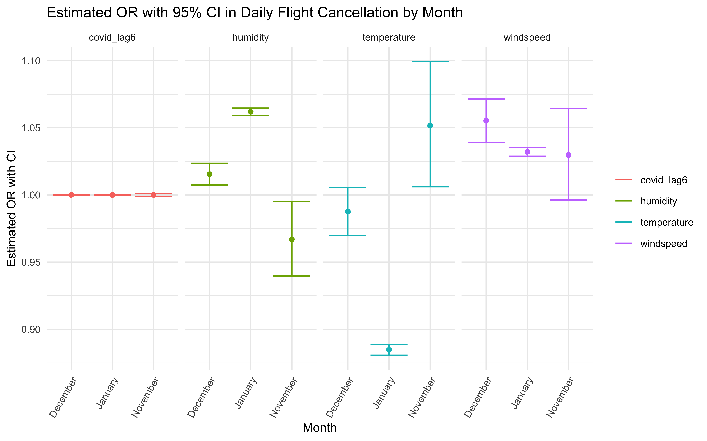

library(dplyr)##
## Attaching package: 'dplyr'## The following objects are masked from 'package:stats':
##
## filter, lag## The following objects are masked from 'package:base':
##
## intersect, setdiff, setequal, unionlibrary(tidyverse)## ── Attaching packages
## ───────────────────────────────────────
## tidyverse 1.3.2 ──## ✔ ggplot2 3.3.6 ✔ purrr 0.3.4
## ✔ tibble 3.1.8 ✔ stringr 1.4.1
## ✔ tidyr 1.2.0 ✔ forcats 0.5.2
## ✔ readr 2.1.2
## ── Conflicts ────────────────────────────────────────── tidyverse_conflicts() ──
## ✖ dplyr::filter() masks stats::filter()
## ✖ dplyr::lag() masks stats::lag()library(ggridges)
library(patchwork)
library(plotly)##
## Attaching package: 'plotly'
##
## The following object is masked from 'package:ggplot2':
##
## last_plot
##
## The following object is masked from 'package:stats':
##
## filter
##
## The following object is masked from 'package:graphics':
##
## layoutknitr::opts_chunk$set(
echo = TRUE,
warning = FALSE,
fig.width = 8,
fig.height = 6,
out.width = "90%"
)
theme_set(theme_minimal() + theme(legend.position = "bottom"))
cancel_airline = read_csv("tidied_data/cancel_airline.csv")## Rows: 216 Columns: 11
## ── Column specification ────────────────────────────────────────────────────────
## Delimiter: ","
## chr (3): month, airline_name, year_month
## dbl (8): year, day, temperature, humidity, windspeed, covid_case, cancel_cou...
##
## ℹ Use `spec()` to retrieve the full column specification for this data.
## ℹ Specify the column types or set `show_col_types = FALSE` to quiet this message.cancel_tidy = read_csv("tidied_data/cancel_tidy.csv")## Rows: 216 Columns: 10
## ── Column specification ────────────────────────────────────────────────────────
## Delimiter: ","
## chr (3): month, airline_name, year_month
## dbl (7): year, day, temperature, humidity, windspeed, covid_case, cancel_count
##
## ℹ Use `spec()` to retrieve the full column specification for this data.
## ℹ Specify the column types or set `show_col_types = FALSE` to quiet this message.We wanted to investigate factors that are related to - and may be used to predict daily flight cancellation count since the effects of weather and COVID-19 were our primary research interests, but we did not have any precise hypothesis. For instance, there can be daily flight cancellations because of COVID breakouts or lockdowns.
In this research, we look for a relationship between cancellation and a number of variables. The number of cancellations each day is therefore regarded as the result (dependent variable), and exposures of interest are regarded as the independent variables.
cancel_count: daily flight cancellation count in JFK
airport temperature: daily average dry bulb temperature
humidity: daily average relative humidity
windspeed: daily average relative windspeed
covid_case: new daily cases of COVID-19
airline_name: domestic airline year_month: the
date format in “Year Month”
Since our outcome, cancel_count, is calculated using a
count variable (number of cancellation) repeated over time, we’ll model
it using a Poisson regression model.
# poisson distribution of counts
his_plot<- cancel_tidy %>%
plot_ly(x = ~cancel_count,
type = "histogram", marker = list(color = 'rgb(255, 102, 102)'))
his_plot %>%
layout(
title= 'Distribution of daily flight cancellation, 2021/11/1 to 2022/1/31',
xaxis = list(title = "Daily flight cancellation", tickangle = -45),
yaxis = list(title = "Count"))Cancellation count per month show difference both by month and airline, therefore, using month and airline as stratification factors.
cancel_airline <- cancel_tidy %>%
group_by(year_month, airline_name) %>%
mutate(Total_number_of_cancellation = sum(cancel_count)) %>%
select(year_month, airline_name, Total_number_of_cancellation) %>%
distinct %>%
mutate(year_month = fct_relevel(year_month, "2021-Nov", "2021-Dec", "2022-Jan"))
cancel_airline %>%
pivot_wider(
names_from = airline_name,
values_from = Total_number_of_cancellation) %>%
head() %>%
knitr::kable(digits = 2, caption = "Monthly flight Cancellation numbers by month and airline") | year_month | American Airlines | Alaska Airlines | JetBlue Airways | Delta Air Lines | Endeavor Air | Republic Airways | United Air Lines |
|---|---|---|---|---|---|---|---|
| 2021-Nov | 42 | 23 | 11 | 8 | 3 | 8 | 1 |
| 2021-Dec | 174 | 143 | 252 | 226 | 10 | 5 | 171 |
| 2022-Jan | 1047 | 977 | 1121 | 1039 | 1058 | 1047 | 672 |
bar_plot1 = cancel_airline %>%
mutate(year_month = fct_relevel(year_month, "2021-Nov", "2021-Dec", "2022-Jan")) %>%
plot_ly(x = ~year_month, y = ~Total_number_of_cancellation, color = ~airline_name, type = "bar", colors = "OrRd")
bar_plot1 = bar_plot1 %>%
layout(xaxis = list(title = "Time"),
yaxis = list(title = "Monthly flight cancellation numbers"),
margin = list(b = 100),
barmode = 'group')
bar_plot1bar_plot2 = cancel_airline %>%
mutate(year_month = fct_relevel(year_month, "2021-Nov", "2021-Dec", "2022-Jan")) %>%
plot_ly(x = ~airline_name, y = ~Total_number_of_cancellation, color = ~year_month, type = "bar", colors = "OrRd")
bar_plot2 = bar_plot2 %>%
layout(xaxis = list(title = "Airline Name", tickangle = -45),
yaxis = list(title = "Monthly flight cancellation numbers"),
margin = list(b = 100),
barmode = 'group')
bar_plot2poisson = glm(cancel_count ~ temperature + humidity + windspeed + covid_case,family = "poisson",data=cancel_tidy)
summary(poisson) ##
## Call:
## glm(formula = cancel_count ~ temperature + humidity + windspeed +
## covid_case, family = "poisson", data = cancel_tidy)
##
## Deviance Residuals:
## Min 1Q Median 3Q Max
## -10.834 -3.818 -1.062 1.687 12.682
##
## Coefficients:
## Estimate Std. Error z value Pr(>|z|)
## (Intercept) 2.257e+00 8.342e-02 27.06 <2e-16 ***
## temperature -1.240e-01 1.852e-03 -66.97 <2e-16 ***
## humidity 5.970e-02 1.080e-03 55.29 <2e-16 ***
## windspeed 3.868e-02 1.313e-03 29.46 <2e-16 ***
## covid_case 1.017e-05 8.435e-07 12.06 <2e-16 ***
## ---
## Signif. codes: 0 '***' 0.001 '**' 0.01 '*' 0.05 '.' 0.1 ' ' 1
##
## (Dispersion parameter for poisson family taken to be 1)
##
## Null deviance: 15063.0 on 215 degrees of freedom
## Residual deviance: 5171.4 on 211 degrees of freedom
## AIC: 6137.1
##
## Number of Fisher Scoring iterations: 6cancel_tidy %>%
nest(df = -month) %>%
mutate(
models = map(.x = df, ~ glm(cancel_count ~ temperature + humidity + windspeed + covid_case,family = "poisson", data = .x)),
results = map(models, broom::tidy)
) %>%
unnest(results) %>%
select(month, term, estimate) %>%
mutate(term = fct_inorder(term)) %>%
pivot_wider(
names_from = term,
values_from = estimate) %>%
knitr::kable(digits = 6, caption = "Poisson model nested by month")| month | (Intercept) | temperature | humidity | windspeed | covid_case |
|---|---|---|---|---|---|
| November | 0.073197 | 0.057638 | -0.041925 | 0.028955 | -8.6e-05 |
| December | -0.902469 | 0.006326 | 0.026320 | 0.035434 | 2.3e-05 |
| January | 2.407321 | -0.133471 | 0.064321 | 0.033555 | 9.0e-06 |
poisson_by_month = cancel_tidy %>%
nest(data = -month) %>%
mutate(
models = map(.x = data, ~glm(cancel_count ~ temperature + humidity + windspeed + covid_case, family = "poisson", data = .x)),
results = map(models, broom::tidy)
) %>%
select(month, results) %>%
unnest(results) %>%
mutate(
OR = exp(estimate),
CI_lower = exp(estimate - 1.96 * std.error),
CI_upper = exp(estimate + 1.96 * std.error),
p.value = format(p.value, scientific = TRUE, digits = 3)
) %>%
select(month, term, OR, CI_lower,CI_upper, p.value)
poisson_by_month %>%
filter(term != "(Intercept)" ) %>%
knitr::kable(digits = 3, align = "llccc", col.names = c("Month", "Terms", "Estimated adjusted OR", "CI lower bound", "CI upper bound", "P-value"))| Month | Terms | Estimated adjusted OR | CI lower bound | CI upper bound | P-value |
|---|---|---|---|---|---|
| November | temperature | 1.059 | 1.020 | 1.100 | 2.52e-03 |
| November | humidity | 0.959 | 0.936 | 0.983 | 7.29e-04 |
| November | windspeed | 1.029 | 1.002 | 1.058 | 3.73e-02 |
| November | covid_case | 1.000 | 0.999 | 1.001 | 7.77e-01 |
| December | temperature | 1.006 | 0.989 | 1.024 | 4.85e-01 |
| December | humidity | 1.027 | 1.019 | 1.035 | 1.73e-11 |
| December | windspeed | 1.036 | 1.022 | 1.050 | 1.42e-07 |
| December | covid_case | 1.000 | 1.000 | 1.000 | 1.96e-29 |
| January | temperature | 0.875 | 0.871 | 0.879 | 0.00e+00 |
| January | humidity | 1.066 | 1.064 | 1.069 | 0.00e+00 |
| January | windspeed | 1.034 | 1.031 | 1.037 | 5.43e-105 |
| January | covid_case | 1.000 | 1.000 | 1.000 | 2.55e-18 |
Create a plot showing the estimated ORs and CIs for each month
poisson_by_month %>%
filter(term != "(Intercept)") %>%
ggplot(aes(x = month, y = OR, color = term)) +
geom_point(show.legend = FALSE, aes()) +
geom_errorbar(aes(ymin = CI_lower,
ymax = CI_upper)) +
labs(
title = "Estimated OR with 95% CI in Cancellation Count Data by Month",
x = "Month",
y = "Estimated OR with CI"
) +
theme(legend.position="right", legend.title = element_blank(),
text = element_text(size = 10),
axis.text.x = element_text(angle = 60, hjust = 1, size = 8)) +
facet_grid(. ~ term)cancel_tidy %>%
nest(df = -airline_name) %>%
mutate(
models = map(.x = df, ~ glm(cancel_count ~ temperature + humidity + windspeed + covid_case,family = "poisson", data = .x)),
results = map(models, broom::tidy)
) %>%
unnest(results) %>%
select(airline_name, term, estimate) %>%
mutate(term = fct_inorder(term)) %>%
pivot_wider(
names_from = term,
values_from = estimate) %>%
knitr::kable(digits = 6, caption = "Poisson model nested by airline")| airline_name | (Intercept) | temperature | humidity | windspeed | covid_case |
|---|---|---|---|---|---|
| American Airlines | 1.133334 | -0.122565 | 0.066371 | 0.050882 | 1.6e-05 |
| Alaska Airlines | 2.994560 | -0.110218 | 0.046087 | 0.037056 | 6.0e-06 |
| JetBlue Airways | 1.792243 | -0.137557 | 0.071265 | 0.035052 | 1.3e-05 |
| Delta Air Lines | 3.067498 | -0.107131 | 0.045346 | 0.034974 | 2.0e-06 |
| Endeavor Air | 2.417540 | -0.150592 | 0.082641 | 0.012874 | 1.8e-05 |
| Republic Airways | 2.042393 | -0.134743 | 0.061405 | 0.047570 | 1.5e-05 |
| United Air Lines | 3.366334 | -0.073912 | 0.027191 | 0.045288 | -4.0e-06 |
poisson_by_airline = cancel_tidy %>%
nest(data = -airline_name) %>%
mutate(
models = map(.x = data, ~glm(cancel_count ~ temperature + humidity + windspeed + covid_case, family = "poisson", data = .x)),
results = map(models, broom::tidy)
) %>%
select(airline_name, results) %>%
unnest(results) %>%
mutate(
OR = exp(estimate),
CI_lower = exp(estimate - 1.96 * std.error),
CI_upper = exp(estimate + 1.96 * std.error),
p.value = format(p.value, scientific = TRUE, digits = 3)
) %>%
select(airline_name, term, OR, CI_lower,CI_upper, p.value)
poisson_by_airline %>%
filter(term != "(Intercept)" ) %>%
knitr::kable(digits = 3, align = "llccc", col.names = c("Airline Name", "Terms", "Estimated adjusted OR", "CI lower bound", "CI upper bound", "P-value"))| Airline Name | Terms | Estimated adjusted OR | CI lower bound | CI upper bound | P-value |
|---|---|---|---|---|---|
| American Airlines | temperature | 0.885 | 0.878 | 0.892 | 5.48e-196 |
| American Airlines | humidity | 1.069 | 1.063 | 1.074 | 9.54e-138 |
| American Airlines | windspeed | 1.052 | 1.046 | 1.059 | 9.69e-58 |
| American Airlines | covid_case | 1.000 | 1.000 | 1.000 | 1.34e-13 |
| Alaska Airlines | temperature | 0.896 | 0.888 | 0.904 | 2.16e-128 |
| Alaska Airlines | humidity | 1.047 | 1.041 | 1.053 | 5.48e-55 |
| Alaska Airlines | windspeed | 1.038 | 1.030 | 1.045 | 1.52e-24 |
| Alaska Airlines | covid_case | 1.000 | 1.000 | 1.000 | 1.07e-02 |
| JetBlue Airways | temperature | 0.871 | 0.864 | 0.879 | 5.78e-209 |
| JetBlue Airways | humidity | 1.074 | 1.069 | 1.079 | 3.13e-183 |
| JetBlue Airways | windspeed | 1.036 | 1.029 | 1.042 | 1.87e-30 |
| JetBlue Airways | covid_case | 1.000 | 1.000 | 1.000 | 5.78e-10 |
| Delta Air Lines | temperature | 0.898 | 0.889 | 0.908 | 1.21e-84 |
| Delta Air Lines | humidity | 1.046 | 1.041 | 1.052 | 9.07e-66 |
| Delta Air Lines | windspeed | 1.036 | 1.029 | 1.043 | 8.55e-24 |
| Delta Air Lines | covid_case | 1.000 | 1.000 | 1.000 | 3.60e-01 |
| Endeavor Air | temperature | 0.860 | 0.850 | 0.871 | 3.84e-123 |
| Endeavor Air | humidity | 1.086 | 1.077 | 1.095 | 5.70e-87 |
| Endeavor Air | windspeed | 1.013 | 1.005 | 1.021 | 2.01e-03 |
| Endeavor Air | covid_case | 1.000 | 1.000 | 1.000 | 3.95e-12 |
| Republic Airways | temperature | 0.874 | 0.865 | 0.883 | 1.07e-144 |
| Republic Airways | humidity | 1.063 | 1.057 | 1.070 | 4.68e-81 |
| Republic Airways | windspeed | 1.049 | 1.041 | 1.056 | 1.16e-40 |
| Republic Airways | covid_case | 1.000 | 1.000 | 1.000 | 4.10e-09 |
| United Air Lines | temperature | 0.929 | 0.916 | 0.942 | 3.76e-25 |
| United Air Lines | humidity | 1.028 | 1.021 | 1.034 | 3.17e-16 |
| United Air Lines | windspeed | 1.046 | 1.034 | 1.059 | 1.73e-14 |
| United Air Lines | covid_case | 1.000 | 1.000 | 1.000 | 5.71e-02 |
Create a plot showing the estimated ORs and CIs for each airline
poisson_by_airline %>%
filter(term != "(Intercept)") %>%
ggplot(aes(x = airline_name, y = OR, color = term)) +
geom_point(show.legend = FALSE, aes()) +
geom_errorbar(aes(ymin = CI_lower,
ymax = CI_upper)) +
labs(
title = "Estimated OR with 95% CI in Cancellation Count Data by Airline",
x = "Airline",
y = "Estimated OR with CI"
) +
theme(legend.position="right", legend.title = element_blank(),
text = element_text(size = 10),
axis.text.x = element_text(angle = 60, hjust = 1, size = 8)) +
facet_grid(. ~ term)